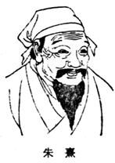
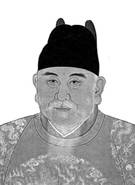
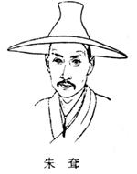
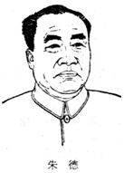

朱姓是中国人口最多的二十大姓之一，尤其在江浙皖地区中极有影响。朱姓大约占了当代人口的1.3，即每1 000个中国人中姓朱的人至少有13个，总人口大约在1 500余万。《中国人名大辞典》收入了朱姓历代名人653名，占名人总数的1.44，排在名人姓氏的第十一位；朱姓的著名文学家占中国历代文学家总数的0.92，排在第二十一位；朱姓的著名医学家占中国历代医学家总数的1.9，排在第十二位。
我国朱姓产生过许多世家大族，出现过无数名人。先秦以来，朱姓称帝者25人，先后建立了高句丽、后梁、明等政权。杰出的人物有：西汉大臣朱买臣、高句丽国君朱蒙，东汉大将朱儁，三国时魏国名僧朱士行，东晋名将朱序，南朝梁国大将朱异，唐朝宰相朱敬则、名将朱环、割地称秦的朱沘、割地称冀王的朱滔，五代后梁太祖朱温，宋朝医学家朱肱、词人朱敦儒、诗人朱弁，南宋理学家兼教育家朱熹、学者朱震，元朝医学家朱丹溪、数学家朱世杰、地理学家朱思本、画家朱德润、戏曲作家朱凯，元明之际学士朱升，明朝开国皇帝朱元璋、剧作家朱权、朱有炖、历史学家朱载堉，明清之际学者朱之瑜，清朝书画家朱耷、文学家朱彝尊、文字训诂学家朱骏声，民国中央研究院院长朱家骅、民主革命家朱执信、地质学家兼古生物学家朱森，中华人民共和国元帅朱德、物理学家朱经武、美学家朱光潜、语言学家朱德熙、民族乐器演奏家朱英、化学下程学家朱亚杰、电子学家朱物华、生理学家朱壬葆、实验生物学家朱洗、鱼类学家朱元鼎、病毒学家朱既明、理论物理学家朱洪元、土壤化学家朱祖祥。
朱 亥：战国时期的勇士。据说，他力大无穷，勇气过人，曾凭着40斤重的铁锥，保存了赵国。
朱 家：秦汉之际游侠，鲁国人，以任侠闻名，专好济人之急，解人之厄。被他所藏匿救活的豪杰之士数以百计，而其中最突出的是救季布。
朱 蒙：*高句丽的开国者。传说母为河伯(河神)之女，感天而生朱蒙。善射。约公元前37年在沸流水(今浑江)畔之纥升骨(今桓仁五女山城)建高句丽国。
朱买臣：(？─前115)，字翁子，西汉吴县（今属江苏省）人。家贫，好读书，常斫柴卖钱为食，挑着柴担，仍诵书不绝于口，其妻羞之，要求离婚，买臣不能留。过了几年，他去长安上书，书久不报，幸而遇见同乡严助。严助当时颇得宠幸，将他推荐给武帝，说《春秋》、《楚词》称旨，拜中大夫，与严助同为侍中。当时东越屡叛，买臣以为发兵可以平定，武帝遂任命他为会稽太守。他与横海将军韩说共击破东越有功，徵召入京为主爵都尉。后坐法免官，复为丞相长史。是一位以高风亮节而著称之臣，后因被陷害而死。
朱 邑：（？—前58年），字仲卿，西汉庐江舒县（今安徽省庐江西南）人，曾历任大司农丞、太守等，被时人称为治行第一。为西汉王朝的九卿之一。
朱 穆：东汉南阳宛县（今河南省南阳）人，以正直而著称，被后人谥之为“文忠先生”。
朱 儁：(?一195)东汉会稽上虞(今属浙江)人，字公伟。任右中郎将，与皇甫嵩等镇压颍川、汝南、陈国等地黄巾军。又围攻南阳赵弘、韩忠、孙夏等黄巾军。后累迁右车骑将军、太尉，封钱塘侯。
朱世卿：南朝陈无神论思想家。生平事迹不详。根据道家的自然天道观和范缜的“神灭”思想，肯定“万法万性皆自? 然之理”，”无有造为之者”，反对神造世界说，并驳斥了佛教的因果报应观点。著作有《性法自然论》，收入《广弘明集》。
朱 应：三国吴人。中国早期到海外的旅行家之一。约在吴黄武五年(公元226年)由交州刺史吕岱派他和康泰赴扶南等国，从事外交活动。经历相传闻的国家有一百数十个。归国后撰有《扶南异物志》。
朱士行：三国时第一个往西域求法的僧人。颍川(郡治今河南禹县)人。初依昙摩迦罗(意译法时)所传授戒法出家，专究经典。曾在洛阳讲《道行般若经》，感到经中译理未尽，为探求梵本，于魏甘露五年(公元260年)从雍州长安(今陕西西安西北)出发，涉流沙亲到于阗(今新疆和田一带)，得梵本九十章。未及东归，即客死彼地。其梵本使弟子送归洛阳，由无罗叉、竺叔兰等译出，即《放光般若经》。中国僧人讲经从他开始。
朱 序：（?—393)东晋义阳平氏(今河南桐柏西)人，字次伦。太元二年(公元377年)任梁州剌史，镇襄阳。前秦军攻城，他率众固守，母韩氏率妇女补筑新城，号为夫人城。后以部将叛变，城破被俘。太元八年他随苻坚南下，淝水之战时，乘机反秦。回晋后曾防守洛阳、襄阳等地多年。
朱 燮:(?一613)隋末江南农民起义首领。吴郡（治今江苏苏州)人。曾出家为道士，通经史，懂兵法，隋末任昆山县博士。大业九年(公元613年)率数十学生起义，“民苦役者赴之如归”．与常熟起义军领袖管崇，共推*刘元进为主，进据吴郡，任尚书仆射。后被隋将王世充打败，在吴战死。
朱庆馀：唐诗人。越州(州治今浙江绍兴)人。宝历进士，官秘书省校书郎。其诗辞意清新，描写细致，为张籍所赏识，内容则多写个人日常生活。有《朱庆馀诗集》。
朱敬则：(635--709)唐毫州永城(今届河南)人。字少连。武则天时任右补阙。长安三年(公元703年)迁正谏大夫，旋同凤阁鸾台平章事，时魏元忠、张说为人诬陷，因他力谏，方得免死。后被诬降官。通史学，芸采魏、晋以来君臣成败之事，著《十代兴亡论》及《五等沦》等。
朱 沘：(742—784)唐幽州昌平(今属北京市)人。初为幽州节度使朱希彩部将，受军众推为留后，被任为卢龙节度使。建中三年(公元782年)因弟*朱滔叛唐，他被免职，以太尉衔留居长安。次年，泾原兵在京师哗变，德宗出奔奉天(今陕西乾县)，他被立为帝，国号秦，年号应天。兴元元年(784年)改国号为汉，自号汉元天皇，与*朱滔相呼应。不久被李晟击败．逃奔至彭原（今甘肃庆阳南)，为部将杀死。
朱 滔:(746—785)唐幽州昌平(今属北京市)人。卢龙节度使*朱沘弟。沘入朝留京师，由他继任。建中二年(公元781年)击败李惟岳，得德棣二州。次年，因请求深州不得，乃与王武俊助田悦反叛，称冀王。后王武俊降唐，他联合回纥兵攻贝州，为武俊所败。旋即降唐，不久病死。
朱 温：(852—912)即后梁太祖。五代梁王朝的建立者。公元907—912年在位。宋州砀山(今属安徽)人。唐乾符四年(（公元877年)参加黄巢起义。黄巢建立大齐政权时，任同州防御使。中和二年(公元882年)叛变降唐，被任为河中行营招讨副使，赐名全忠。次年，为宣武节度使。中和四年与李克用等联兵镇压黄巢起义军。后进封为梁王。成为割据势力，与李克用父子进行长期的混战。又曾建立在军士脸上刺字的制度。天佑四年(公元907年)代唐称帝，改名晃，建都汴（河南开封)，国号梁，史称后梁．乾化二年(公元912年)为其子友硅所杀。
朱淑真：宋女作家。号幽栖居士，钱塘(今浙江杭州)人，一说梅宁(今属浙江)人。南宋绍定(况周颐《蕙风词话》以为应作北宋绍圣)中尚在世。生于仕宦家庭。相传阅婚嫁不满，抑郁而终。能画，通音律。词多幽怨，流于感伤。也能诗。有诗集《断肠集》，词集《断肠词》。
朱寿昌：宋扬州天长人，字康叔。朱巽子。以荫为将作监主簿。历知岳州、阆州，有政绩。又知广德军。曾与母不相闻五十年。神宗熙宁初，弃官刺血写《金刚经》，行四方求之，得于同州，乃迎母并二弟归，由是以孝闻。仕终中散大夫。卒年七十。
朱 肱：宋医学家。字翼中，浙江吴兴人，后居杭州。曾任奉改郎医学博士，故后人亦称朱奉议。编着《伤寒百问》（后史名为《南阳活人书》)对汉张仲景《伤寒论》一书，从经络病因传变加以分析，并附诸方治法，为分类论述《伤寒论》的著作。
朱敦儒：南宋词人。字希真，号岩壑，河南(府治今河南洛阳)人。早年隐居不仕。绍兴二年，赐进土出身，曾任两浙东路提点刑狱．秦桧为相时，任鸿胪少卿．其词语言清畅，多写隐居生活，内容消极；南膜后，北方沦陷于金，也有感怀，愤激之作。有《樵歌》。
朱 熹:(1130—1200)南宋哲学家、教育家。字元晦，一字仲晦，号晦庵，别称紫阳，徽州婺源(今属江西)人，侨寓建阳(今属福建)。曾任秘阁修撰等职。主张抗金，并强调准备。被韩侂胄派目为“伪学”。广注典籍，对经学、史学、文学、乐律以至自然科学有不同程度贡献。在哲学上发展了二程(程颢、程颐)关于理气关系的学说，集理学之大成，建立一个完整的客观唯心主义的理学体系；世称*程朱学派。认为理和气不能相离：“天下未有无理之气，亦未有无气之理”。但又断言：“理在先，气在后”；“有是理便有是气，但理是本。”强调“天理”和“人欲”的对立，要求人们放弃“私欲”，服从“天理”。他从事教育五十余年，认为“为学之道，英先于穷理；穷理之要，必在于读书；读书之法，莫贵于循序而致精；而致精之本，则又在于居敬而持志”(《朱文公文集，卷十四《甲寅行宫便殿奏札二》)。吸收当时科学成果，提出了对自然界变化的某些见解，如关于阴阳二气的宇宙演化说，如从高山上残留的螺蚌壳论证地质变迁(原为海洋)说等。他的理学一直成为后来封建地主阶级统治人民的理论工具，在明清两代被提到儒学正宗的地位。他的博览和精密分析的学风对后世学者很有影响。日本在德川时代，“朱子学”也颇流行。著作有《四书章句集注》、《周易本义》、《诗集传》、《楚辞集注》，及后人编纂的《晦庵先生朱文公文集》和《朱干语类》等多种。
朱 弁：(?一1144)? 南宋文学家。字少章．婺源(今属江西）人。为朱熹族叔祖，建炎初，以太学生擢任通问副使赴金。不屈于金人诱胁，被扣留十六年方归。其怀念故国之诗，深切宛转，见元好问所编《中州集》。有《曲洧旧闻》、《风月堂诗话》等。
朱德润：(1294—1365)元画家。宁泽民，原籍睢阳(今河南商)，号睢阳散人，家居昆山(今属江苏)。曾任国史编修、镇东行中书省懦学提举。善诗文，工书法，笔迹遒丽。擅画山水，初学许道宁，后宗郭熙，乡作溪山平远、林木清森之景。也画人物。著《存复斋集》。行世间迹有《秀野轩》、《林下鸣琴》等图。
朱丹溪:(1281—1358)元医学家。名震亨，字彦修，婺州义乌(今属浙江)人。家居义乌丹溪，故人称丹溪翁。早年即好医学，继从许谦学“理学”，后又从杭州名医罗知悌学习。罗授以刘完素、张子和、李东垣三家学说，并以《内经，意旨为之分析讲述。他继承罗氏之学并有所发挥。著《格致馀论》，创论多种疾病的病机，是由“阳有馀，阴不足”所致，治法主张“滋阴降火”。对当时《和剂局方》中的药偏于温燥，著《局方发挥》，加以批评；另著有《素问纠略》、《本草衍义补遗》等。
朱 凯：元戏曲作家。字士凯，曾任江浙行省官吏。同戏曲家*钟嗣成相友善，作品曾互作序。所作杂剧今知有*《昊大海》、《黄鹤楼》二种，均存。
朱思本：(1273--1333)元地理学家、道教徒。字本初，号贞一，江西临川人。尝学道于龙虎山中，后居大都(今北京)。他利用奉诏代祀名山大川的机会，得以周游南北，考察地理。以实地调查所得，参校前人著作，积十年（1311—1320)之力，绘成《舆地图》二卷。其图用计里画方法，先作各地分图，然后合成长广各七尺的大图；精确远过前人，在我国制图史上是一杰出的创造。原图已佚。明罗洪先的《广舆图》，即系根据此图增补而成。思本又著有《贞—斋诗文稿》，其中也有论述地理的篇章。
朱光卿：(?—1337)元末广东农民起义首领。顺帝至元三年(1337年)春率众起义于增城，国号大金，年号亦符。石昆山、钟大明纷起率众参加。归善(今惠阳)聂秀卿、谭景山也率众响应，推戴甲为首，称“定光佛”。同年秋战败被俘。
朱自清：(1898--1948)? 现代散文家、诗人，字佩弦，江苏扬州人，原籍浙江绍兴，文学研究会成员。学生时代即创作新诗，后又从事散文写作。曾在清华大学，西南联合大学任教。抗日战争结束后，积极支持反对国民党反动统治的学生运动。1948年8月因贫病在北平逝世。著有诗文集《踪迹》，散文集《背影》、《欧游杂记》、《你我》、《伦敦杂记》，文艺论著《诗言志辨》、《沦雅俗共赏》等。有些诗作和散文表现了对黑暗现实的不满和对光明未来的期待。他的散文以语言洗炼。文笔秀丽著称。
朱元璋：（1328－1398）明朝开国皇帝，幼名重八，又名兴宗，字国瑞，濠州钟离（今安徽省凤阳）人。少时在皇觉寺为僧，元末参加农民起义，龙凤二年（1356年）攻下南京，称吴国公。击败陈友谅后称吴王。1368年率军攻克大都，推翻元朝，建立明朝，号称明太祖。以后逐步统一全国。他普查户口，丈量土地，均平赋役；兴修水利，推行屯田，并减轻对工匠的奴役。同时抑制豪强贪吏，制定《大明律》，废除宰相的职位，加强皇权，以巩固中央集权。为社会经济文化的进一步发展提供了有利的条件。
朱宸聚：(?—1520)? 明宗室。袭封宁王。与致仕都御史李士实、举人刘养正等谋夺帝位。正德十四年(1519年)起兵，从南昌出鄱阳湖，声言直取南京。为王守仁所败，被俘，历时仅四十三日。次年被杀。
朱亮祖：(?一1380)明初将领。六安(今属安徽)人。元末为“义兵”(地主武装)元帅，被朱元璋所俘，遂投降。参与攻灭陈友谅、张士诚等役。洪武元年(1368年)，随廖永忠取两广。封永嘉侯。后出镇北平(今北京)，广东，以“所为多不法”，被召入京，鞭死。
朱 纨：(1494—1549)明苏州长洲(今江苏吴县)人，字子纯。正德进士，嘉靖二十六年(1547年)提督浙闽海防军务、巡抚浙江，攻克倭寇巢穴双屿港(在宁波附近海上），加强海禁，上疏揭发浙闽势家通倭渔利。因此为势家构陷，革职按司，愤而自杀。一说其卒年几1550年。
朱 权：(1378—1448)明戏曲理论家、剧作家、古琴家。明太祖第十七子。封于大宁，溢献，世称宁献王。自号大明奇士、山涵虚子、丹丘先生。著作有数十种，其中关于音乐、戏曲者有《琴阮启蒙》、*《神奇秘谱》、《太和正音谱》等。又作杂剧十二种。现存《大罗天》、《私奔相如》两种。信奉道家学说，在作品和论著中都有表现。
朱有燉:（1379—1439)明戏曲作家。号诚斋。明太祖之孙，袭封周王，谥宪，世称“周宪王”。所作杂剧今知有三十一种，现均存，以《曲江池》、《义勇辞金》等较著名。另有散曲集《诚斋乐府》今存。
朱载堉：(1536一约1610)明代律学家．历学家。宁伯勤，号句曲山人。明宗室郑恭王厚烷之子．早年从舅父何塘习天文、算术．后因皇族内讧，父获罪系狱．遂筑土屋于宫门外，独居十九年，钻研乐律、数学、历学。父死后，不承袭爵位，而以著述终身。著有*《乐律全书》、《律吕正企》、《律吕质疑辩惑》、《嘉量算经》等书。《乐律全书》总结前人的乐律理论，并加以发展；其中《律吕精义》通过精密计算与科学实验，创造“新法密率”，是音乐史上最早用等比级数平均划分音律、系统闸明*十二平均律理论的声学论著；《圣寿万年历》、《律历融通》论述历算岁差的方法，亦甚洋密。
朱以海:(1618—1662)即南明监国鲁王。崇祯十七年(1644年)嗣王位。次年，清兵陷南京，张国维，钱肃乐等起兵浙东，拥他监国．同时，唐王在福建称帝，两政权互相倾轧。绍武元年(1646年)清兵攻取浙东，他流亡海上，到永历七年(1653年)取消监国名义，后在台湾病死。
朱之瑜：(1600—1682)明清之际学者。字鲁屿，号舜水，余姚(今属浙江)人。明诸生。崇祯末，屡奉征辟，皆不就。明亡，图据舟山为抗清根据地，失败后亡命日本、越南、暹罗等地，常秘密入内地，与张煌言等进行反清复明运动。事败，居日本讲学二十余年，深受日本水户藩主德川光囹(国)的尊礼。卒后，日本学者私谥文恭先生。为学重实际效用和事功，反对“专在理学研穷”。他说：“宋儒辨析毫厘，不曾做得一事。”(《朱舜水先生文集，卷九》)强调知识应从日常生活实践中求得。重视史学研究，认为“经简而史明，经深而史实，经远而史近”，“得之史而求之经，亦下学而上达耳”。他的史学观点，和黄宗羲、顾炎武相似。其学术思想对当时日本有一定影响。著作由其门人辑集、德川光圈父子刊印为《朱舜水先生文集》，主要是他在日本讲学时的书札问答。
朱柏庐：(1617--1688)江苏昆山人，名用纯，字致一，柏庐为其自号。明生员。清初居乡教授学生，治学用程、朱为本，提倡知行并进。康熙时坚辞不应博学鸿懦科。其《治家格言》，世称《朱子家训》，被后世视为中国传统的启蒙教育读本，影响深远。另有《大学中庸讲义》、《愧讷集》。
朱方旦：(?一1682)清湖北汉阳人，号尔枚，自称二眉道人。康熙时秘密刻书，自称圣贤，讲修炼术数之学。曾入大将军勒尔锦幕府。后游历江浙各地。康熙二十一年(1682年)以“诡立邪说、煽惑愚民”的罪状被捕处死，为清初文字狱之一。
朱素臣：清初戏曲作家。名榷，号反社会主义苼庵，吴县(今属江苏)人。作有传奇二十种左右，今存*《十五贯》、《秦楼月》、《聚宝盆》、《翡翠园》、《未央天》、《文星观》、《锦衣归》、《万年觞》八种。《十五贯》和《翡翠园》较著名，演出也最多。《未央天》则宣扬封建奴隶道德。同李玉友善，曾助其校订《北词广正谱》，编传奇《清忠谱》，又同李书云合编《音韵须知》。
朱 耷：(一do)(约1626一约1705)清初画家。谱名统棽，南昌(今属江西)人。明宁王朱权后裔。明亡，一度为僧，又当道士，在南昌建青云谱道院。有雪个、个山、人屋，八大山人等别号。擅画水墨花卉禽鸟，笔墨简括，形象夸张，亦写山水，意境冷寂。所画鱼鸟每作“白眼向人”的情状，署款八大山人，联缀似“哭之”或“笑之”的字样；以及含意隐晦的题诗，都寄寓着家国之痛。他的水墨画，对后来的写意画影响很大。工书法，行楷学王献之，纯朴圆润，自成一格。相传其弟道明，字秋月。也在南昌青云谱出家为道士，道号望云子。善画，风格租犷简练。书法近黄庭坚。尝署名“牛石慧”，草书连写成“生不拜君”，以示其抗清情绪。
朱佐朝：清初戏曲作家。字良卿，吴县(今属江苏)人。作有传奇三十余种，现存，《渔家乐》、《朝阳风》、《夺秋魁》、《艳云亭》、《乾坤啸》等十三种。大都取材历史传说，作品曲词通俗，风格粗犷，但多宣扬忠孝节义和神怪迷信思想。《渔家乐》较著名。
朱 轼：字若瞻（1665-1736），号可亭，清代江西省高安人。康熙三十三年进士。由知县累擢浙江巡抚，筑沿海石塘数百里。曾上疏请罢垦田，慎刑狱，又陈盐政利弊八条。卒谥文端。曾与蔡世远同辑《历代名臣传》、《历代循吏传》、《历代名儒传》，另有《周易传义合订》、《广惠编》、《朱文端公文集》等。
朱一贵：(?一1721)清康熙年间台湾农民起义首领。福建长泰人，小名祖，明亡后迁居罗汉门(今属台南)，养鸭为生。因知府王珍的贪污残暴，康熙六十年(1721年)夏率众起义，以反清复明相号召，称“大明重兴元帅”，各地纷起响应。在诸罗的赤山取得大胜，人数发展到三十万，占领全台，被推为中兴王，年号永和，设立国师、太师、国公等官爵。清政府从闽浙调兵渡海进攻，起义军战斗失利，他被俘就义。
朱起风：（1874--1948)训诂学家。字丹九，浙江海宁人。清靡生。搜集古书中的双音词语，著*《辞通》二十四卷，共三百万言。依*平水韵编次。凡同一词语的不同变体，合为一条。刚加按语，说明其通借仳变之故。又著有《字类辨证》，辨析形音义容易混淆的字。
朱莲芬：(1856一?)清昆曲演员。名延禧，又名福寿，字水芝，江苏元和(今吴县)人。演旦，经常在北京同昆丑杨鸣玉合演。以《思凡下山》、《刺梁》等剧著名。兼演京剧，又长于书画。光绪中叶卒。
朱益吾：(？—1674)沛初江西棚民起义军首领．原籍广东，寄居江西萍乡，以传授拳术组织棚民，进行反清斗争。顺治五年(1648年)率棚民几万人连克萍乡、袁州(治今宜春)。次年又克万载。康熙十三年(1674年)再度攻克万戟、萍乡，后在三关激战中牺牲。
朱骏声：(1788－1858)清文字训诂学家。字丰芑，号允情，江苏吴县人。道光时官黟县训导。撰《说文通训定声》，专明转注、假借之旨，对《说文》和训诂的研宄颇有贡献。
朱洪章：清代贵州省黎平人，字焕文。咸丰初应募为乡勇，先后从胡林翼、塔齐布、曾国荃镇压太平军，转战赣鄂皖各省。同治三年破天京时首先登城，直扑天王府擒获洪仁达。官至狼山镇点兵。
朱彝尊：(1629—1709)清文学家。字锡鬯，号竹姹，浙江秀水(今嘉兴)人，康熙时举博学鸿词科，授检讨，曾参加纂修《明史》。通经史，能诗词古文。于词推崇姜夔，为*浙西词派的刨始者。其词多写琐事，记宴游，并有·不少无聊的咏物之作。诗与王土稹齐名，时称“南朱北王”，又有“王爱好，朱贪多”之诮，有些篇章于民生疾苦也有所反映。有《经义考》，《口下旧闻》、《曝书亭集》等。编有《词综》、《明诗综》等。
朱 濆：(?－1809)清嘉庆年间东南海上起义军首领。广东人。初以广东沿海为根据地，打击清军。嘉庆十二年(1807年）进攻台湾的鹿港、淡水、噶玛兰、苏澳，与清军激战，后在海战中牺牲。
朱克生：清代江南宝应人，字国桢（1631-1679），一字念义，号秋崖。诸生。所为诗才气高爽。生平足迹半天下，所至皆纪以诗。尝搜罗邑中忠孝节义诸事迹，为《人物志》。有《毛诗考证》、《雪夜丛谈》、《环溪秋崖诗集》等。
朱洪英：清末天地会首领。又名朱声洪、朱盛洪，朱世雄。湖南江华人。1852年(咸丰二年)与胡有禄在南宁武装起义。1854年攻克灌阳，建立*升(昇)平天国，称镇南王。由广西入湖南，攻克江蓝厅(今江华东南)。次年5月攻克东安，9月退出，12月攻克永明(今讧永)，活动于湘桂边界。1857午攻克广西柳州，次年6月退出，转入贵州古州(今榕江)。后不详。
朱 德：字玉阶，四川省仪陇人。中国共产党和中华人民共和国的主要领导人之一、中国人民解放军的创建人之一、杰出的无产阶级革命家、政治家和军事家。戎马一生，功绩卓著；忠职勤政，鞠躬尽瘁；胸怀天下，气度恢宏；谦虚谨慎，纯朴忠厚。朱德革命一生，功勋卓著，位高至极，但他谦虚谨慎，勤勤恳恳，朴实无华，忠厚仁慈，给世人留下了质朴而崇高的元帅形象。
朱自清：著名散文家、诗人，浙江省绍兴人。其散文以语言洗炼，文笔秀丽著称。曾历任几大名校教授，参与编辑《文学季刊》、《太白》等杂志。著有诗文集《踪迹》，散文集《背影》、《欧游杂记》等。
朱葆三：(1848--1926)近代买办。名佩珍。浙江定海人。曾作上海日商平和洋行买办。1878年(光绪四年)开设新裕商行，经营进出口贸易．后又开办华安水火保险公司，并兼水电，轮船，面粉企业董事。1910年(宣统二年)与日本资本家合资开办上海织丝公司。辛亥革命后，曾任沪军都督府财政长。1919年五四运动时以上海总商会会长名义，通电支持段祺瑞，破坏爱国运动，受到梅论抨击，被解职。
朱光潜：笔名孟实，安徽省桐城县人。我国现代美学的开拓者和奠基者之一。他学贯中西，博古通今。美学成为一门独立的科学，是 在近代。王国维、蔡元培、鲁迅、周扬等为我国现代美学的发展作出了卓越的贡献。但是直到20世纪三十年代，美学还没有成为一门独立 的学科。这时朱光潜写的《文艺心理学》、《谈美》、《诗论》等专著。
朱执信：(1885—1920)近代民主革命家。原名大符。原籍浙江萧山，生于广东番禺。1905年(光绪三十一年)赴日本留学，参加同盟会。为《民报》撰文，与改良派论战。1910年(宣统二年)与赵声、倪映典等发动广州新军起义．次年参加黄兴领导的广州起义(黄花向之役)。1913年参加讨袁(世凯)运动，后又加入中华革命党，在南方继续策动讨袁的武装斗争。1917年“护法”运动中，任孙中山大元帅府军事联络等职。次年，随孙中山到上海。五四运动后在上海办《建设》杂志，积极拥护孙中山，坚持革命。1920年赴广东策动桂系军队反正，在虎门被杀害。有《朱执信集》。
朱庆澜：（1874--1941)浙江绍兴人，字子桥。曾任成都陆军第三十三混成协协统、第十七镇镇统、四川副都督、黑龙江代理都督、广东省省长等职。1924年后，从事慈善救济工作。1931午九一八事变后，募款支持东北义勇军，1936年任国民党政府赈务委员会委员长。1941年在西安病逝。
朱孝堿：(1857—1931)近代词人。原名祖谋，字古微，号沤尹，又号疆村，浙江归安(今吴兴)人．光绪进土，官礼部侍郎。词风近于吴文英．辛亥革命后多怀恋情室之作。有《疆村语业》。对辑校词籍用力甚专，刻唐宋金元人词为《疆村丛书》。
朱宝庭：(1880--1947)? 中国共产党的工人运动领导人之一。浙江宁波人。五四运动时期在上海领导海员工人进行反帝反封建斗争。1922年加入中国共产党。后参加领导香港海员大罢工与上海五卅运动。曾任中华全国总工会执行委员，太平洋职工国际委员、海员职工国际委员等职。1931年去苏联参加赤色职工国际工作，1953年回国后，到闽浙赣革命根据地负责工会工作。1935年到上海参加抗日运动。抗战爆发后到延安，任中共中央职工委员会委员。1947年1月24日在陕西安塞病逝。
朱家骅：(1892－1963)浙江吴兴人，字骝先。早年留学德国，归国后任北京大学教授。1926年任中山大学代理校长。1932年起历任国民党政府教育部部长和国民党中央党部组织部长等职。他曾经是国民党内CC集团的头目之一，后分化出来，独成一派。于1949年逃往台湾，1963年病死。
朱端钧：(1907--1978)导演、戏剧教育家。字公吕，浙江余姚人。早年参加洪深丰持的复曰剧社。抗日战争时期参加*上海剧艺让等戏剧团体，坚持“孤岛”爱国演剧活动。先后导演过《夜上海》、《妙峰山》、《孔雀胆》等剧。建国后，担任上海戏剧学院副院长、表演系主任等职，为培养话剧表演、导演人才作出了积极的贡献，同时还导演了话剧《上海屋檐下》、《年青的一代》、《关汉卿》、《吝啬鬼》，戏曲《星星之火》等剧目。在导演艺术上，只有朴实细腻，清逸隽永的拽特风格。
朱 洗：(1899—1962)实验生物学家。浙江临海人，曾任中山大学、台湾大学教授和北平研究院研究员。解放后任中国科学院实验生物研究所所长，中国科学院生物学部委员。他研究动物卵子的成熟、受精和人工单性生殖，对卵子成熟程度与胚胎发育的关系有所阐明。创立蟾蜍卵巢离体排卵的方法，为探讨卵子成熟、受精和发育等问题开辟了新的研究途径。在家蚕混精杂交的研究中，发现不同品种的逾数精子能影响后代的遗传性。他重视科学研究为生产建设服务，在引种驯化蓖麻蚕及几种经济鱼类的人工繁殖方面，作出了重要贡献。主要著作有《生物的进化》等。
朱 森：（1902—1943)地质学家、古生物学家。湖南郴县人，曾任地质研究听研究员，重庆大学和中央大学地质系教授。著有《金陵灰岩之珊瑚和腕足类化石研究》、《四川龙门山地质》、与李捷等合著的《宁镇山脉地质》等。
朱凤美：(1895—1970)植物病理学家。江苏宜兴人。历任北平农学院、武昌大学、浙江大学教授，中央农业实验所病虫害系主任。1930年主持建立浙江省昆虫局植物病理研究室。解放后，任华东农业科学研究所、中国农业科学院江苏分院研究员兼植物保护系主任，并当选为中国植物病理学会，中国植物保护学会副理事长。他毕生从事植物病害防治的研究，为防治麦类黑穗病，小麦线虫病、稻瘟病和稻白叶枯病等病害作出了贡献。发表论著甚多，散见于有关杂志。
|